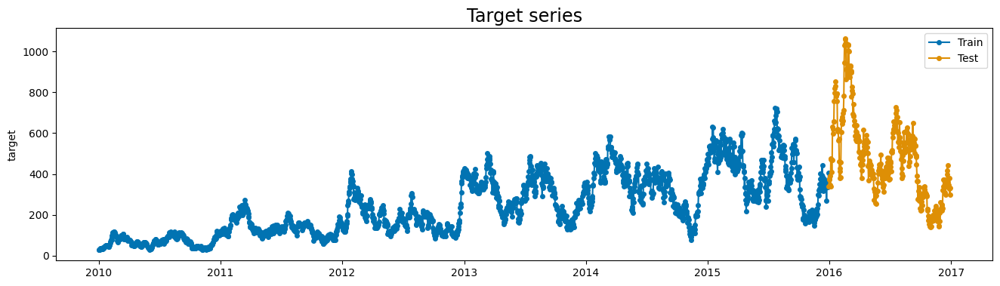
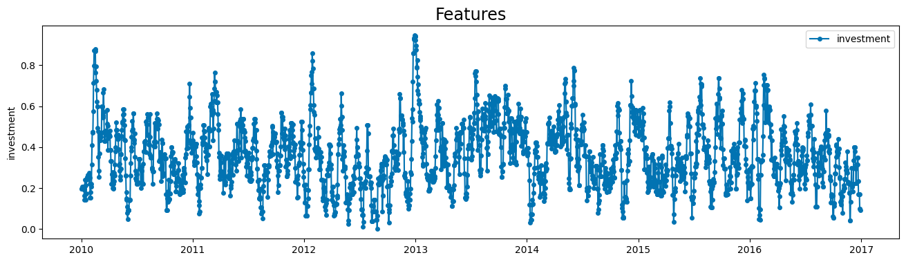
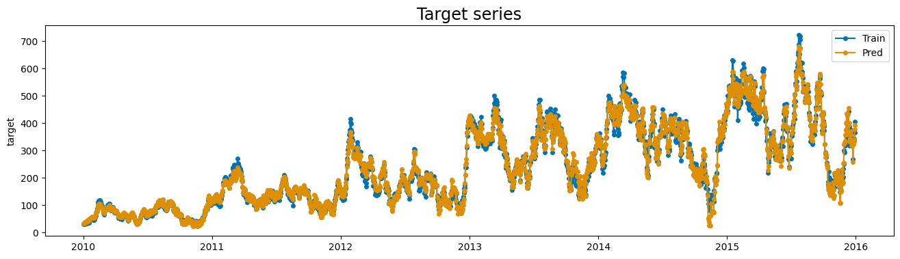
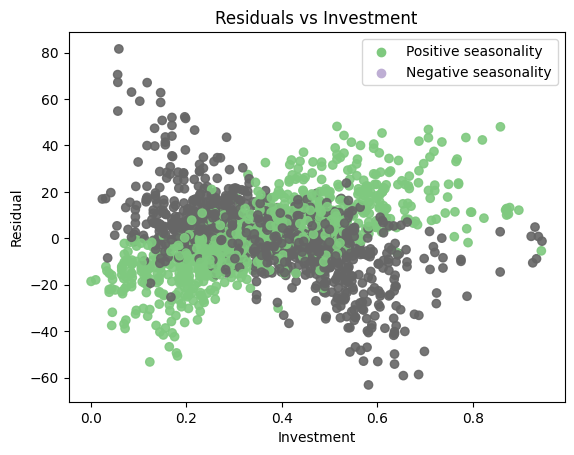
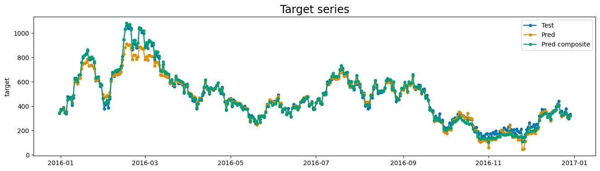
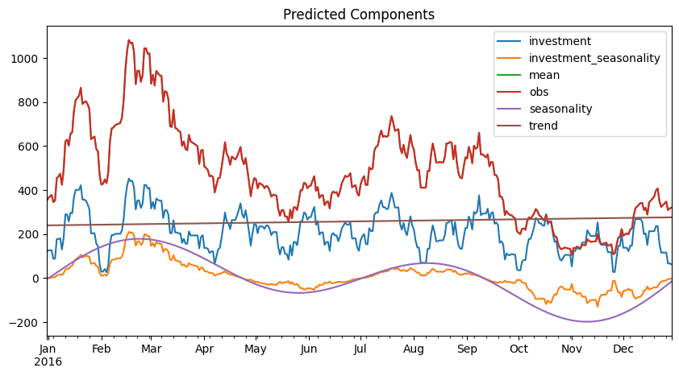

Composition of effects
In previous examples, we saw how to create a simple custom effect, which applies a simple transformation to the input data. However, the effect's interface allows us to apply more complex transformations, such as using the output of previous components as input for the current component, or creating a composite effect that wraps an effect and applies some sort of transformation. This example will cover these topics.
Creating a custom effect
The idea here is to create an effect that uses another predicted component to scale the impact of an exogenous variable.
One classic use-case for this would be using seasonality to scale the effect of investment, that might be proportional to it. Marketing investments are a good example of this. We will implement such a composite effect in this section.
Example dataset
The dataset we use is synthetic, and the relation between the exogenous variable and the target is known. However, let's pretend we don't know this relation, and analize the data to find some insights that motivate the creation of a custom effect. The dataset has a target variable, which is a time series, and an exogenous variable, which is the investment made for each date.
import numpyro.distributions as dist
from matplotlib import pyplot as plt
from sktime.split import temporal_train_test_split
from sktime.utils.plotting import plot_series
from prophetverse.datasets.synthetic import load_composite_effect_example
y, X = load_composite_effect_example()
y_train, y_test, X_train, X_test = temporal_train_test_split(y, X, test_size=365)
display(y_train.head())
display(X_train.head())
plot_series(y_train, y_test, labels=["Train", "Test"], title="Target series")
plot_series(
X["investment"],
labels=["investment"],
title="Features",
)
plt.show()
Output: [1]
| target | |
|---|---|
| time | |
| 2010-01-01 | 29.375431 |
| 2010-01-02 | 30.268786 |
| 2010-01-03 | 29.128912 |
| 2010-01-04 | 31.014165 |
| 2010-01-05 | 31.890928 |
| investment | |
|---|---|
| time | |
| 2010-01-01 | 0.198274 |
| 2010-01-02 | 0.198274 |
| 2010-01-03 | 0.198274 |
| 2010-01-04 | 0.198274 |
| 2010-01-05 | 0.207695 |


The timeseries has a yearly seasonality, and it seems that some oscillations are proportional to the investment. Below, we model the timeseries with a simple linear effect between the investment and the target, and a yearly seasonality based on fourier terms. Then, we will analize the residuals to see if there is any pattern that we can capture with a custom effect.
from prophetverse.effects import LinearEffect
from prophetverse.effects.fourier import LinearFourierSeasonality
from prophetverse.effects.trend import PiecewiseLinearTrend
from prophetverse.engine import MAPInferenceEngine
from prophetverse.sktime import Prophetverse
from prophetverse.utils.regex import exact, no_input_columns
model = Prophetverse(
trend=PiecewiseLinearTrend(
changepoint_interval=500,
changepoint_prior_scale=0.00001,
changepoint_range=-500,
),
exogenous_effects=[
(
"seasonality",
LinearFourierSeasonality(
freq="D",
sp_list=[365.25],
fourier_terms_list=[5],
prior_scale=1,
effect_mode="multiplicative",
),
no_input_columns,
),
(
"investment",
LinearEffect("multiplicative", prior=dist.Normal(0, 1)),
exact("investment"),
),
],
inference_engine=MAPInferenceEngine(),
)
model.fit(y=y_train, X=X_train)
model
Output: [2]
Prophetverse(exogenous_effects=[('seasonality',
LinearFourierSeasonality(effect_mode='multiplicative',
fourier_terms_list=[5],
freq='D',
prior_scale=1,
sp_list=[365.25]),
'^$'),
('investment',
LinearEffect(prior=<numpyro.distributions.continuous.Normal object at 0x1102fbe90>),
'^investment$')],
inference_engine=MAPInferenceEngine(),
trend=PiecewiseLinearTrend(changepoint_interval=500,
changepoint_prior_scale=1e-05,
changepoint_range=-500))Please rerun this cell to show the HTML repr or trust the notebook.Prophetverse(exogenous_effects=[('seasonality',
LinearFourierSeasonality(effect_mode='multiplicative',
fourier_terms_list=[5],
freq='D',
prior_scale=1,
sp_list=[365.25]),
'^$'),
('investment',
LinearEffect(prior=<numpyro.distributions.continuous.Normal object at 0x1102fbe90>),
'^investment$')],
inference_engine=MAPInferenceEngine(),
trend=PiecewiseLinearTrend(changepoint_interval=500,
changepoint_prior_scale=1e-05,
changepoint_range=-500))PiecewiseLinearTrend(changepoint_interval=500, changepoint_prior_scale=1e-05,
changepoint_range=-500)PiecewiseLinearTrend(changepoint_interval=500, changepoint_prior_scale=1e-05,
changepoint_range=-500)We plot the predictions on training set to see if the model performs well.
y_pred = model.predict(X=X_train, fh=y_train.index)
plot_series(y_train, y_pred, labels=["Train", "Pred"],
title="Target series")
plt.show()
Output: [3]

We can see that some peaks are not captured by the model. Our hypothesis to explain this phenomenon is that the investment has more impact on the target when it is done during the positive seasonality periods. To test this, we plot the residuals of the model against the investment, and color the points based on the seasonality component. We can see that slopes are different for positive and negative seasonality, which indicates that our hypothesis is possibly correct.
components = model.predict_components(X=X_train, fh=y_train.index)
residual = y_train["target"] - components["mean"]
fig, ax = plt.subplots()
ax.scatter(
X_train["investment"],
residual,
c=components["seasonality"] < 0,
cmap="Accent",
alpha=0.9
)
# Create legend manually
colors = plt.cm.get_cmap("Accent").colors
ax.scatter([], [], color=colors[0], label="Positive seasonality")
ax.scatter([], [], color=colors[1], label="Negative seasonality")
ax.legend()
ax.set(xlabel="Investment", ylabel="Residual", title="Residuals vs Investment")
fig.show()
Output: [4]

Creating the composite effect
To model this behaviour with Prophetverse, we will create a custom effect, that
scales a new effect by the output of a previous component.
The _fit and _transform methods call the inner effect's methods, and the
predict method multiplies the inner effect's predictions by the seasonality, which
is passed as base_effect_name.
from typing import Any, Dict, List
import jax.numpy as jnp
import pandas as pd
from prophetverse.effects.base import BaseEffect
class WrapEffectAndScaleByAnother(BaseEffect):
"""Wrap an effect and scale it by another effect.
Parameters
----------
effect : BaseEffect
The effect to wrap.
"""
_tags = {"requires_X": False, "capability:panel": False}
def __init__(
self,
effect: BaseEffect,
base_effect_name: str,
):
self.effect = effect
self.base_effect_name = base_effect_name
super().__init__()
self.clone_tags(effect)
def _fit(self, y: pd.DataFrame, X: pd.DataFrame, scale: float = 1):
"""Initialize the effect.
This method is called during `fit()` of the forecasting model.
It receives the Exogenous variables DataFrame and should be used to initialize
any necessary parameters or data structures, such as detecting the columns that
match the regex pattern.
Parameters
----------
y : pd.DataFrame
The timeseries dataframe
X : pd.DataFrame
The DataFrame to initialize the effect.
scale : float, optional
The scale of the timeseries. For multivariate timeseries, this is
a dataframe. For univariate, it is a simple float.
Returns
-------
None
"""
self.effect.fit(X=X, y=y, scale=scale)
def _transform(self, X: pd.DataFrame, fh: pd.Index) -> Dict[str, Any]:
"""Prepare input data to be passed to numpyro model.
Returns a dictionary with the data for the lift and for the inner effect.
Parameters
----------
X : pd.DataFrame
The input DataFrame containing the exogenous variables for the training
time indexes, if passed during fit, or for the forecasting time indexes, if
passed during predict.
fh : pd.Index
The forecasting horizon as a pandas Index.
Returns
-------
Dict[str, Any]
Dictionary with data for the lift and for the inner effect
"""
return self.effect.transform(X=X, fh=fh)
def _predict(
self, data: Dict, predicted_effects: Dict[str, jnp.ndarray]
) -> jnp.ndarray:
"""Apply and return the effect values.
Parameters
----------
data : Any
Data obtained from the transformed method.
predicted_effects : Dict[str, jnp.ndarray], optional
A dictionary containing the predicted effects, by default None.
Returns
-------
jnp.ndarray
An array with shape (T,1) for univariate timeseries.
"""
out = self.effect.predict(
data=data, predicted_effects=predicted_effects
)
base_effect = predicted_effects[self.base_effect_name]
return base_effect * out
@property
def input_feature_column_names(self) -> List[str]:
"""Return the input feature columns names."""
return self.effect.input_feature_column_names
Instantiating the model with the composite effect
To create the model, we use the model instance we have, and the rshift operator to append the composite effect to the model.
import numpyro.distributions as dist
from prophetverse.engine.optimizer import AdamOptimizer
composite_effect_tuple = (
"investment_seasonality", # The effect ID, can be what you want
# Now the effect object
WrapEffectAndScaleByAnother(
# The effect to wrap
effect=LinearEffect("multiplicative", prior=dist.HalfNormal(1)),
# The previous effect to use as scale. It is important
# That this base_effect is passed before this effect in
# exogenous_effect parameter!
base_effect_name="seasonality",
),
# The columns to pass to the effect. In this case, we only pass
# the investment column
exact("investment"),
)
# We use the rshift operator to append an effect to the model
model_composite = model >> composite_effect_tuple
model_composite.fit(y=y_train, X=X_train)
y_pred_composite = model_composite.predict(X=X_train, fh=y_train.index)
We can see below how these oscilations are captured by the model correctly when adding this joint effect.
plot_series( y_train, y_pred_composite, labels=["Train", "Pred"], title="Target series" )
Evaluating the model on test set
We compare to the previous model to see if the new effect improved the predictions on test set:
y_pred_composite = model_composite.predict(X=X_test, fh=y_test.index)
y_pred = model.predict(X=X_test, fh=y_test.index)
plot_series(
y_test, y_pred, y_pred_composite,
labels=["Test", "Pred", "Pred composite"],
title="Target series")
plt.show()
Output: [7]

Extracting the components
The components can be extracted as usual, with the predict_components method.
components = model_composite.predict_components(fh=y_test.index, X=X_test)
fig, ax = plt.subplots(figsize=(10,5))
components.plot.line(ax=ax)
ax.set_title("Predicted Components")
fig.show()
Output: [8]
